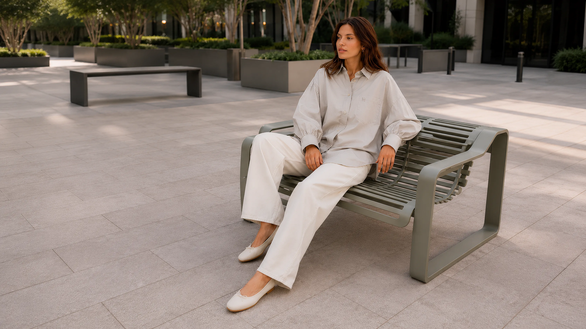

Silence becomes
a statement.
EOLE（エオール）が追求するのは、過度な装飾を排した引き算の美学です。
余計なものを削ぎ落とし、本質だけを残す。洗練された上質な素材と、普遍的なシルエット。
袖を通した瞬間に静かな気品をもたらし、流行に左右されず長く愛用できる、現代的なエレガンスを提案します。
Identity & philosophy
GALLERY. は、洗練された静寂を纏う「EOLE」と、夜のストリートの鼓動を伝える「OKURIH」の2つのブランドを展開するコンセプトストアです。それぞれ異なる表現でありながら、妥協のないクラフトマンシップと本質的な美しさにおいて深く結びついています。

EOLE（エオール）が追求するのは、過度な装飾を排した引き算の美学です。
余計なものを削ぎ落とし、本質だけを残す。洗練された上質な素材と、普遍的なシルエット。
袖を通した瞬間に静かな気品をもたらし、流行に左右されず長く愛用できる、現代的なエレガンスを提案します。

OKURIH（オクリ）は、音楽やストリートカルチャーから生まれた自由で力強い表現です。
ルーズでありながらも計算された絶妙なシルエットと、夜の街に映えるエッジの効いたストリートディテール。
力を抜きながらも確かな存在感を放ち、ルールに縛られない個性を引き出すスタイルを提案します。